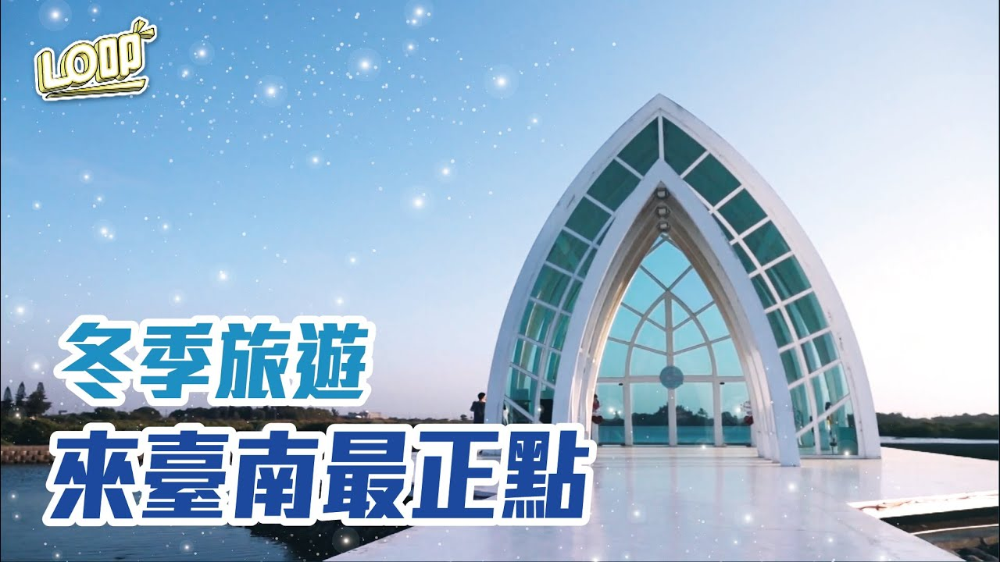
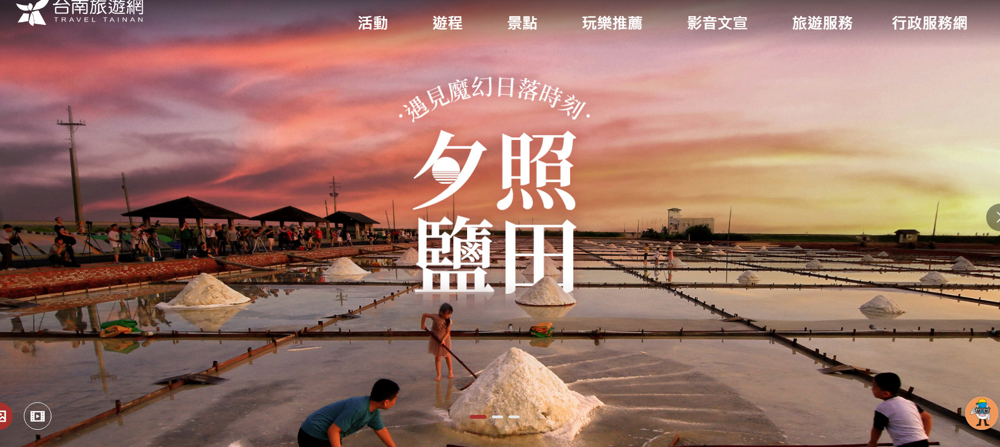
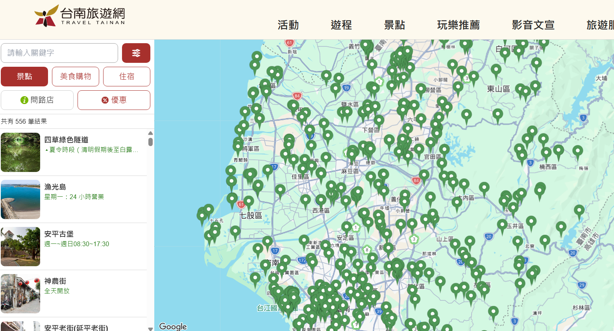

台南小導遊養成記
四年級上學期 · 第 1 課：旅行經驗與主題發想
① 台南，超好玩！
每年有好幾百萬人特地搭高鐵來台南玩。
如果有外國 YouTuber 要你當導遊帶路 —— 你是不是一片空白？😅
我們每天住在台南，把它當成「經過的地方」。但在別人眼中，這裡是特地要來的觀光勝地。今天我們用「觀光客的眼睛」重新看台南！
🙋 你帶人玩過台南嗎？

② 找景點的好幫手：台南旅遊網

想不到要介紹哪裡？這是台南市政府的官方旅遊網，全台南的景點都在這裡，是我們找主題的好幫手！
🔎 功能一：景點搜尋
- ① 搜尋一個區有什麼景點
- ② 篩選你想要的主題（歷史古蹟、自然景觀…）
- ③ 查景點的詳細資料


🗺️ 功能二：旅遊地圖
用地圖就能看到附近有哪些景點，每一個小圖釘都是一個景點！想找學校附近的景點特別好用。
📄 點進景點，會看到…
分類、地址、營業時間、門票寫得清清楚楚（例：安平古堡）：
歷史古蹟
10:00–17:10
全票70/半票35
安平區國勝路82號

③ 任務：景點調查員 🔍
打開台南旅遊網，當一位小小調查員，把答案填進來！
1. 找出 3 個位於「東區」的景點
2. 找出 1 個「在地藝文」景點
3.「水交社文化園區」週六開放時間？
⭐ 加分：「勝利國小」附近有什麼景點？
④ 從「去哪裡」到「玩什麼」
只跟朋友說「我們去安平」，他會問：「去吃東西？還是看古蹟？」🤨
只給地點不夠，要有一個「主題」！
🍔 主題就像速食店「套餐」
選「美食探險套餐」就不會排圖書館；選「時光機套餐（古蹟）」就帶他去看古蹟，不是逛百貨。

🏰 舉例：「時光機套餐（古蹟）」
像安平古堡就很適合放進這個套餐 —— 台灣第一座城堡，一走進去就像回到 400 年前。想想看，這個套餐還能放哪些台南古蹟？
🎯 承重測試：「台南自然風景」套餐，你會選哪些景點？（可複選）
⑤ 主題九宮格
一個主題能放進好多景點！幫 8 個主題各找一個台南景點；中間那格，換你自己想主題！
💡 台南旅遊網有這些主題，可以參考：

🧺 想一想：像「水仙宮市場」這種傳統市場，可以放進哪些主題？（可複選）
同一個地方，其實可以符合好幾個主題喔！
⑥ 我的導覽主題構想卡
把空格填滿，就完成你的第一張導覽構想卡了！
✅ 交出前自己檢查：
恭喜！你已經是小導遊了！
你學會用台南旅遊網找景點、也懂了用「主題」規劃路線。
下一課，我們要把你的主題變成一本真正的導覽小書！